Просмотр и прокрутка
Также часть кликов и взаимодействий с формами — после установки тега и включения измерений.
ОП.03 · тема 0401 / 30
От перехода на сайт
до данных о пользователе
Веб-аналитика Google: кто приходит, откуда, какие страницы открывает и что делает на сайте.
Понимаем структуру02 / 30
UTM-метки в ссылке описывают источник перехода. Чтобы сохранить их и построить отчёт, нужна система аналитики.
utm_source = telegramutm_medium = socialutm_campaign = septemberUTM описывает переход. GA4 связывает его с поведением на сайте.
Понимаем структуру03 / 30
После подключения аналитики взаимодействия с сайтом передаются как события. По ним можно проследить путь от источника до заявки.
Также часть кликов и взаимодействий с формами — после установки тега и включения измерений.
generate_lead, sign_up и purchase передаём в нужный момент с параметрами.
Это примеры событий, а не обязательная цепочка: событие click не означает любой клик на сайте.
Понимаем структуру04 / 30
«На сайт пришло 1000 человек» — только общий объём. Разберём, что произошло с посетителями из Telegram.
пришли из Telegram
открыли страницу регистрации
оставили заявку
Учебные числа из условия. 48 / 320 = 15% открыли регистрацию; 17 / 320 ≈ 5,3% оставили заявку.
Теперь можно оценить результат конкретного источника.
Понимаем структуру05 / 30
Откроем Analytics, войдём в Google-аккаунт, создадим аккаунт Analytics, ресурс и веб-поток. В конце получим Measurement ID.
Результат занятия — место, куда сайт сможет отправлять данные. Установка Google Tag — следующий этап.
Понимаем структуру06 / 30
Три уровня отвечают на разные вопросы. Нажмите на уровень, чтобы увидеть его назначение.
Верхний контейнер. Объединяет ресурсы одного владельца или организации.
Понимаем структуру07 / 30
Для одного обычного сайта чаще всего достаточно одного ресурса и одного веб-потока. ByteCamp — сквозной учебный пример.
Открываем сервис08 / 30
Откройте сервис по адресу:
analytics.google.com ↗Для работы потребуется Google-аккаунт. Если вы ещё не вошли, сначала появится авторизация.
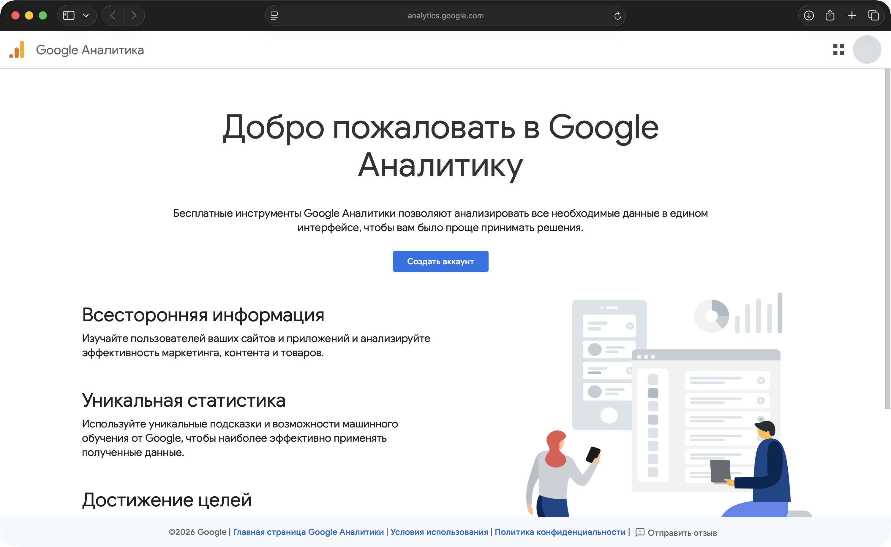
Открываем сервис09 / 30
Используйте аккаунт, под которым будете управлять аналитикой сайта.
Google Account даёт вход в сервис. Analytics Account объединяет ресурсы внутри GA4.
Use your Google Account
Пароль вводится только на странице Google.
NextОткрываем сервис10 / 30
Выберите путь в зависимости от того, использовался ли Analytics раньше.
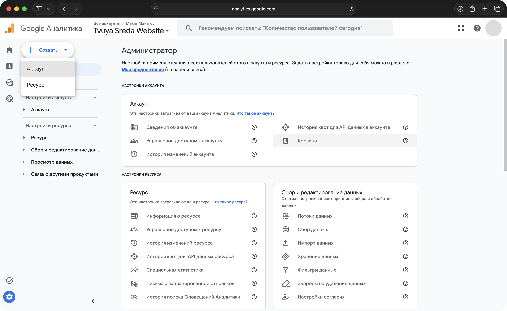
Создаём аккаунт11 / 30
Analytics Account — верхний уровень. Здесь объединяются ресурсы одного владельца или организации.
В поле Account name введите понятное название:
Другой вариант: «Учебная аналитика — Иванов».
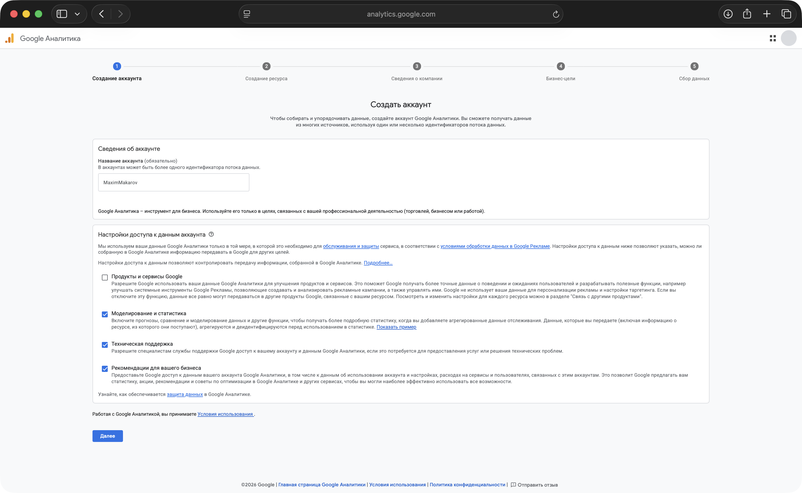
Создаём аккаунт12 / 30
Настройки определяют, какие данные аккаунта доступны Google для указанных целей.
Рассмотрите каждый пункт перед продолжением. Для рабочего проекта выбор зависит от правил организации.
Состояние галочек здесь не является рекомендуемой комбинацией.
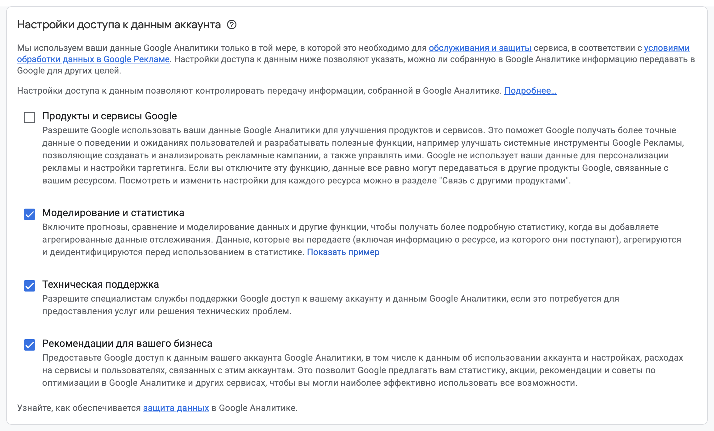
Создаём ресурс13 / 30
Property — рабочий ресурс GA4 для конкретного проекта. Внутри находятся данные, события, отчёты, аудитории и настройки аналитики.
Одна организация может владеть несколькими ресурсами.
Для отдельного учебного сайта создаём отдельный ресурс.
Создаём ресурс14 / 30
По названию должно быть понятно, данные какого проекта хранятся в ресурсе.
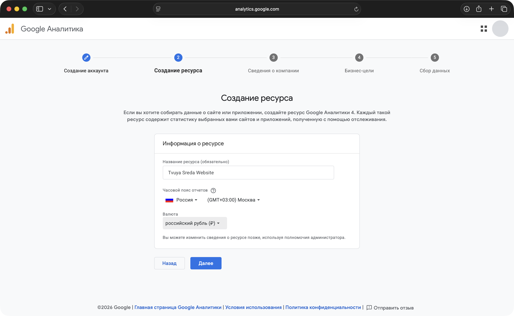
Создаём ресурс15 / 30
Часовой пояс задаёт границы суток в отчётах. Выбирайте пояс основной деятельности проекта.
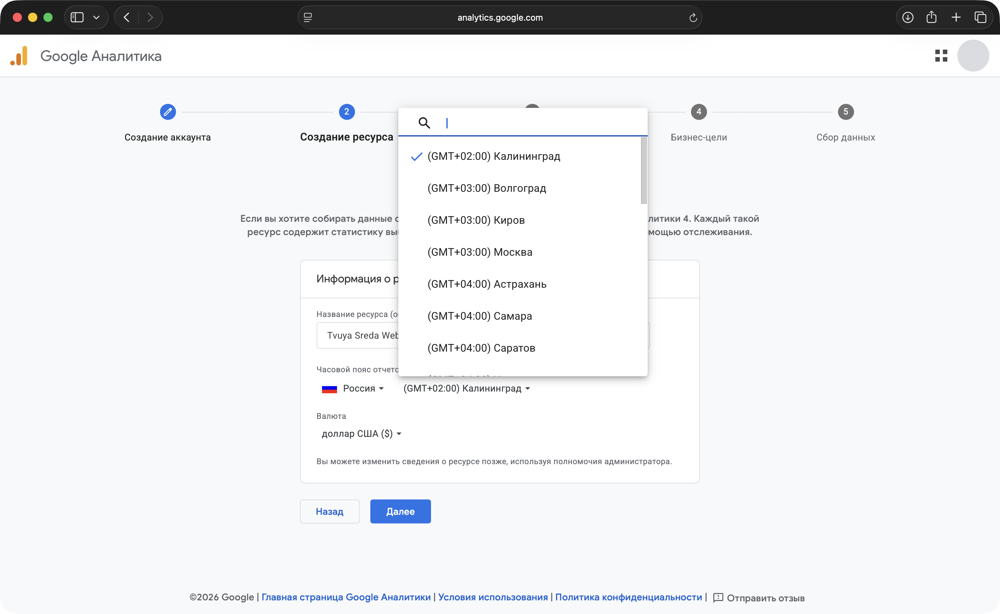
Создаём ресурс16 / 30
Валюта определяет отображение денежных показателей: покупок, выручки и ecommerce-отчётов.
Для проекта с расчётами в рублях:
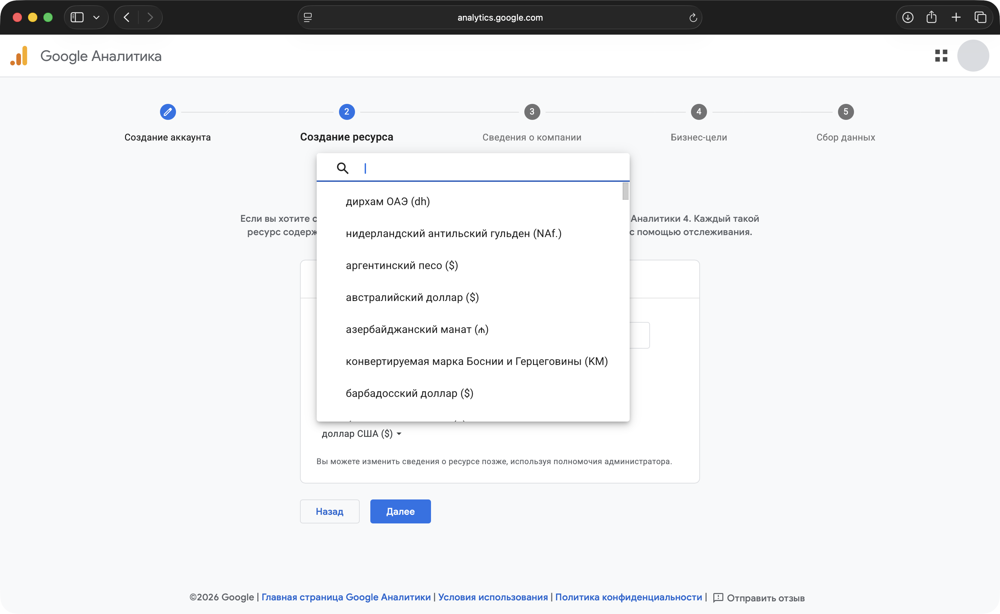
Создаём ресурс17 / 30
Укажите общие сведения о проекте:
Они помогают адаптировать первоначальную настройку. Выбирайте значения, соответствующие вашему проекту.
Сфера и размер организации не задают список событий сайта.
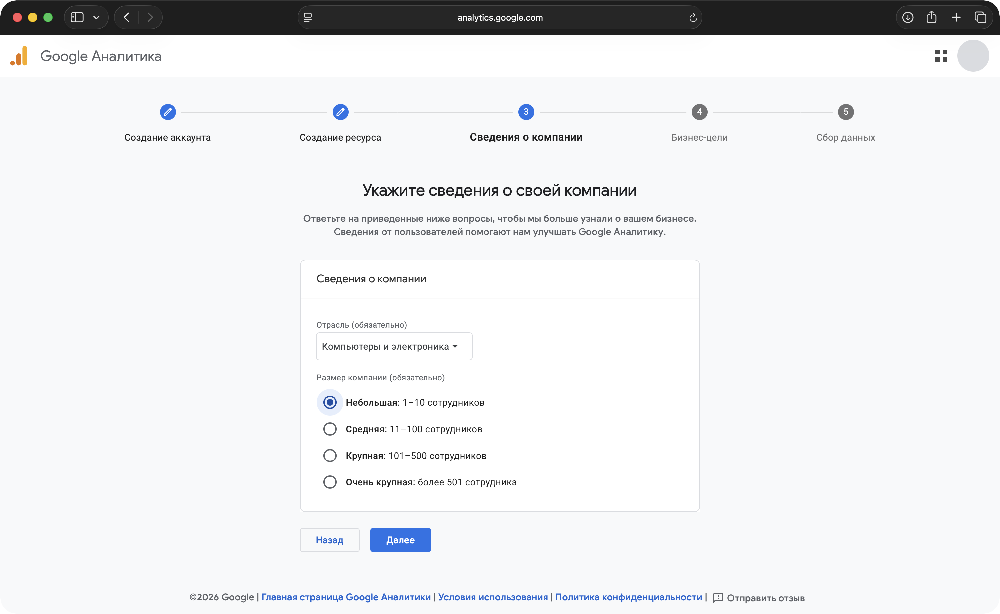
Создаём ресурс18 / 30
Выберите задачи аналитики: заявки, продажи, изучение трафика или поведения пользователей.
Google подберёт стартовый набор отчётов под эти задачи.
Выбор целей меняет набор стандартных отчётов. Сбор событий этим не ограничивается.
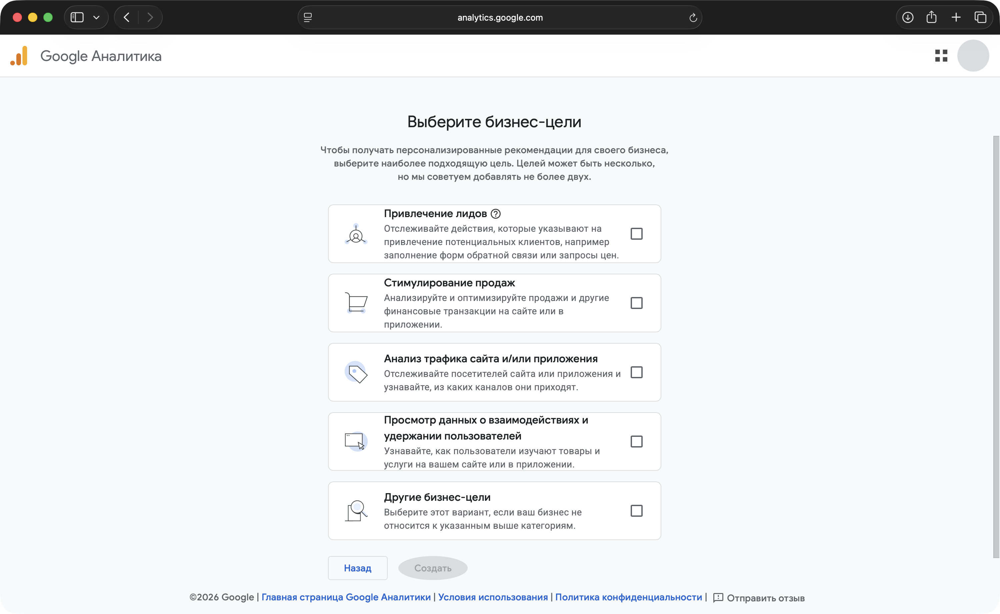
Создаём ресурс19 / 30
Перед созданием проверьте:
Нажмите Create / Создать. Если появятся условия использования, прочитайте их и подтвердите для продолжения.
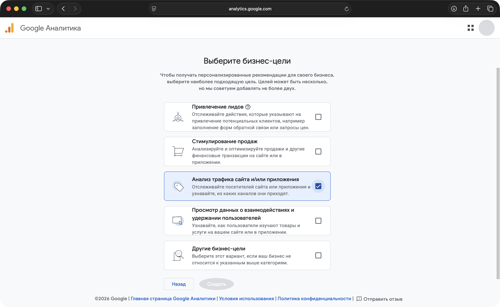
Настраиваем веб-поток20 / 30
Теперь укажем источник данных. Для веб-сайта выбираем Web.
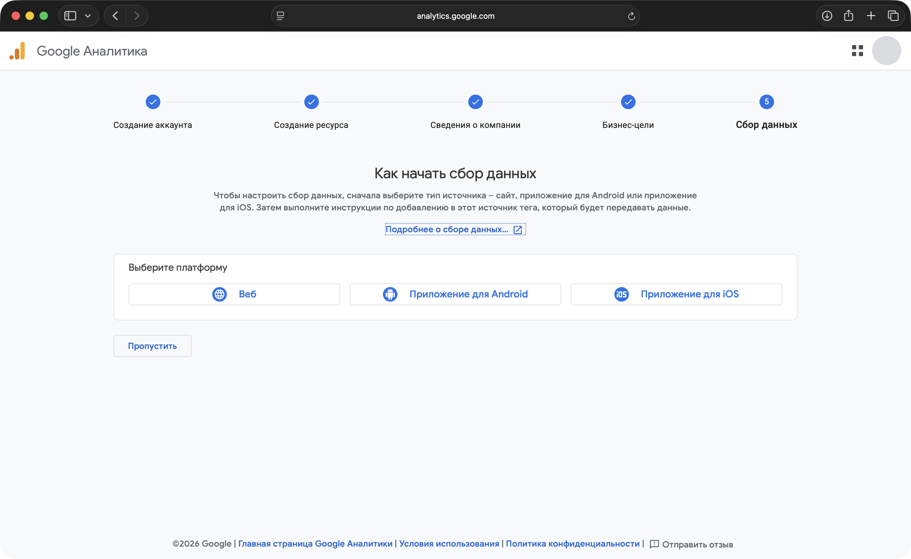
Настраиваем веб-поток21 / 30
Data Stream связывает источник данных с ресурсом GA4. Для сайта используется веб-поток.
После установки Google Tag события сайта будут поступать в выбранный ресурс через этот поток.
Настраиваем веб-поток22 / 30
Сначала выберите протокол, затем введите домен сайта.
Для современного публичного сайта обычно используется HTTPS. Не повторяйте протокол в поле домена.
bytecamp.ru — пример. В своей настройке укажите адрес своего сайта.
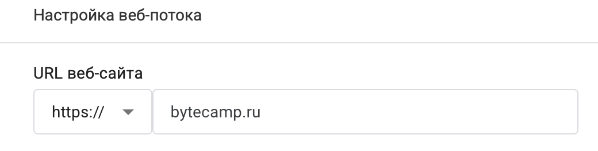
Настраиваем веб-поток23 / 30
Название потока используется внутри GA4 и помогает отличать источники данных.
Для основного сайта также подойдёт Main Website.
Stream name — название. Website URL — адрес сайта. Это разные поля.
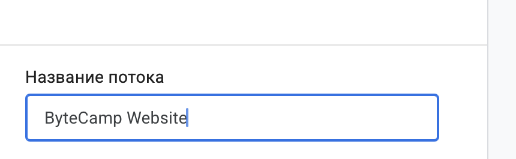
Настраиваем веб-поток24 / 30
Для первого знакомства оставьте Enhanced measurement включённым.
После установки Google Tag ряд событий будет собираться автоматически. Например, просмотр страницы, прокрутка до 90% и переход по исходящей ссылке.
Отдельные измерения можно отключать и настраивать позже.
Включённый переключатель начинает работать после подключения тега на сайте.
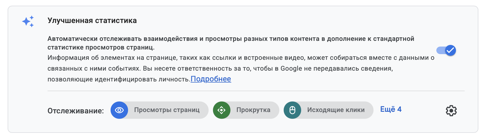
Настраиваем веб-поток25 / 30
Проверьте три параметра:
Создайте поток кнопкой Create stream или Create & continue — название может отличаться в интерфейсе.
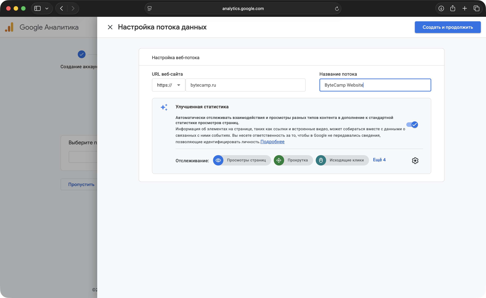
Получаем идентификатор26 / 30
Откройте сведения о созданном потоке — Web stream details.
Сообщение об отсутствии данных ожидаемо: тег ещё не установлен.
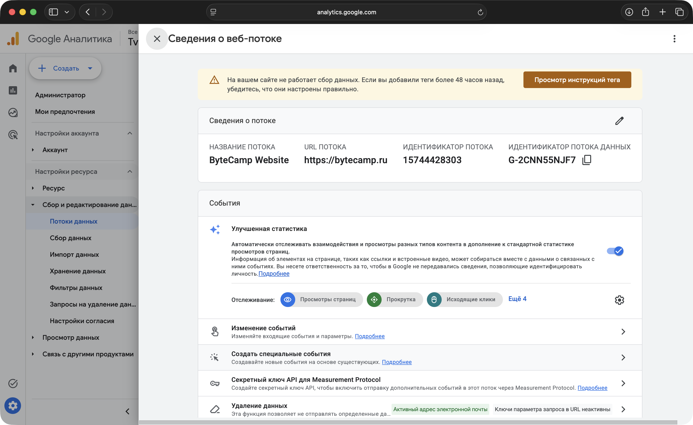
Получаем идентификатор27 / 30
Measurement ID — идентификатор веб-потока GA4. Он указывает, куда отправлять данные сайта.
Используется при настройке Google Tag и интеграций CMS. Это не пароль и не секретный ключ.
Не перепутайте Measurement ID с числовым Stream ID.
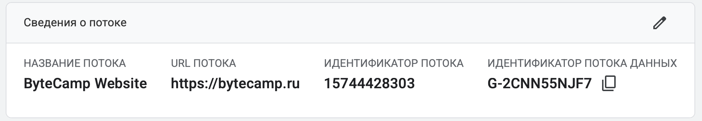
Фиксируем результат28 / 30
Аккаунт, ресурс и поток созданы. Для поступления данных нужно подключить сайт.
Проверяем понимание29 / 30
Объясните назначение каждого уровня своими словами. Затем раскройте карточку и проверьте ответ.
Объединяет ресурсы одного владельца или организации.
Содержит события, отчёты и настройки конкретного проекта.
Описывает источник: сайт, Android- или iOS-приложение.
G-идентификатор, который указывают при настройке тега.
Проверка: вы можете найти свой Account, Property, Web Stream и Measurement ID в интерфейсе.
Продолжение30 / 30
Подключаем сайт к созданному потоку.
Получим тег, установим на сайт и проверим первые автоматически собранные события в Realtime.